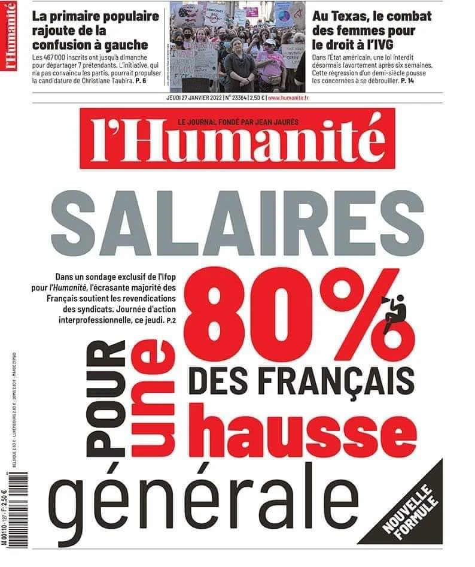

Publication sur X
Fabien Roussel défend une hausse générale des salaires
Date de publication sur X · 27 janvier 2022
Repères éditoriaux
Nous avons relayé l’intervention de Fabien Roussel pour une hausse générale des salaires.
Texte de la publication sur X
80% des Français sont favorables à une hausse des salaires.
Ils ont raison ! Alors que les patrons du CAC 40 se sont augmentés de 30%, les salariés tirent la langue.
Je propose un SMIC à 1900 euros brut (1500 net) et une augmentation générale des salaires. https://t.co/6hDv38MCxg

Sources
PCF 79 · @79Parti sur X · AR-0005-TW-1486647221428928515
À lire aussi · Le 23 avril à Niort, une nouvelle mobilisation contre la réforme de l’assurance chômage
Publications associées
- Fabien Roussel défend une hausse générale des salaires · Version Facebook du message